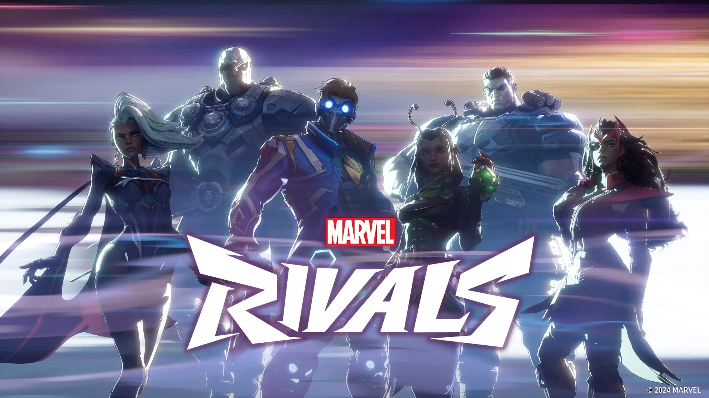

Ascendiendo en el Multiverso: Nuestra Aventura de Boosting en Marvel Rivals
¡Saludos, aspirantes a leyendas del multiverso de Marvel Rivals! Nuestro equipo ha estado inmerso en las intensas batallas clasificatorias de Marvel Rivals, no solo para ofrecer nuestros servicios de boosting de la más alta calidad, sino también para vivir en carne propia los desafíos y las recompensas de ascender en el ranking. Hoy queremos compartir con ustedes una de esas emocionantes travesías.
En esta ocasión, nos enfocamos en ayudar a un jugador, al que llamaremos "NexusPrime", a escalar desde el rango Oro hasta Platino. Un salto significativo que requiere no solo habilidad individual, sino también una comprensión profunda de las composiciones de equipo, los mapas y las estrategias cambiantes del meta.
El Desafío Inicial: Adaptación al Meta y la Comunicación
Al tomar la cuenta de NexusPrime, lo primero que notamos fue la necesidad de adaptarnos rápidamente a su estilo de juego preferido y a los héroes con los que se sentía más cómodo. Marvel Rivals, con su dinámica de equipos de seis y sinergias cruciales, exige una comunicación impecable y una flexibilidad táctica considerable.
Nuestros boosters, jugadores experimentados con horas de juego y un conocimiento exhaustivo de los héroes, se coordinaron para identificar las composiciones de equipo más efectivas en el rango Oro. Observamos una mezcla de estrategias centradas en el daño explosivo, el control de masas y el sostenimiento del equipo. La clave inicial fue identificar los "puntos débiles" de las composiciones enemigas y explotarlos con elecciones de héroes y sinergias bien pensadas.
La Estrategia en Acción: Dominando los Mapas y los Objetivos
Cada mapa en Marvel Rivals presenta sus propios desafíos y oportunidades. Desde los estrechos pasillos de Yggdrasil hasta los amplios espacios abiertos de Wakanda, la comprensión del diseño del mapa y la ubicación estratégica se volvieron cruciales.
Recuerdo una partida particularmente intensa en el Sanctum Sanctorum. El equipo enemigo favorecía una composición de "dive" con héroes como Spider-Man y Venom, buscando flanquear constantemente nuestras líneas. Nuestra estrategia se centró en mantener una formación más cohesiva, utilizando héroes con habilidades de control de área como Scarlet Witch y Doctor Strange para disuadir los avances enemigos y proteger a nuestros carries. La comunicación constante sobre las ubicaciones enemigas y los tiempos de reutilización de las habilidades fue fundamental para asegurar las victorias en este mapa.
Obstáculos en el Camino: Adaptándose a las Contras
No todo fue un camino de rosas. Nos encontramos con equipos enemigos bien coordinados que contrarrestaban nuestras estrategias y nos obligaban a repensar nuestro enfoque. Hubo rachas de derrotas frustrantes que pusieron a prueba nuestra paciencia y nuestra capacidad de adaptación.
La Recompensa: Alcanzando el Platino y la Satisfacción
Después de una serie de encuentros emocionantes y desafiantes, finalmente logramos llevar la cuenta de NexusPrime al rango Platino. La sensación de superar obstáculos difíciles y alcanzar el objetivo fue increíblemente gratificante.
Esta experiencia no solo demostró la efectividad de nuestras estrategias y la habilidad de nuestros boosters, sino que también nos recordó la importancia de la perseverancia, la adaptabilidad y la comunicación en el competitivo mundo de Marvel Rivals.
¿Tu Próximo Escalón?
Si te encuentras luchando por ascender en el ranking de Marvel Rivals o simplemente no tienes el tiempo para dedicarle las horas necesarias, en nuestro equipo estamos listos para ayudarte a alcanzar tus metas. Nuestra experiencia en partidas de alto nivel y nuestro profundo conocimiento del juego nos permiten ofrecer un servicio de boosting eficiente, seguro y confiable.
¡Contáctanos hoy mismo y comienza tu ascenso hacia la cima del multiverso de Marvel Rivals! ¡Te esperamos en la siguiente partida!